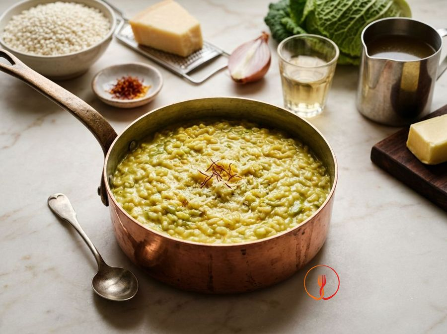

Risotto mantecato alla crema di verza e zafferano
Un primo piatto raffinato dove la verza viene trasformata in una crema vellutata che avvolge il riso, con una nota cromatica data dallo zafferano.
Ingredienti
- Riso Carnaroli320 gr
- Verza500 gr
- Zafferano in pistilli o polvere1 bustina
- Scalogno1
- Brodo vegetale
Fallo in casa: Brodo vegetale ›1.2 lt - Burro freddo30 gr
- Parmigiano Reggiano grattugiato50 gr
- Vino bianco secco50 ml
- Olio extravergine di olivaq.b.
Allergeni
Latte
Può contenere tracce di: Sedano.
Procedimento
- Pulire la verza, eliminare le coste centrali più dure e tagliarla a pezzetti.
- Sbollentare la verza in acqua leggermente salata per 6-7 minuti, scolarla e immergerla in acqua e ghiaccio per fissare il colore.
- Frullare la verza con un filo d'olio e un mestolo di brodo fino a ottenere una crema liscia e densa; tenere da parte.
- Tritare finemente lo scalogno e farlo appassire in una casseruola con un filo d'olio.
- Aggiungere il riso e tostarlo a fuoco vivace per 2 minuti finché i chicchi non saranno lucidi e caldi.
- Sfumare con il vino bianco e lasciar evaporare completamente l'alcol.
- Iniziare ad aggiungere il brodo bollente un mestolo alla volta, aspettando che venga assorbito prima di aggiungerne altro.
- A metà cottura (circa 8 minuti), incorporare la crema di verza e lo zafferano precedentemente sciolto in poco brodo.
- Portare a cottura il riso, spegnere il fuoco e mantecare energicamente con il burro freddo e il parmigiano per ottenere un effetto 'all'onda'.
Valori nutrizionali (stima)
| Per porzione (325 g) | Per 100 g | |
|---|---|---|
| Energia | 1946 kJ / 465 kcal | 598 kJ / 143 kcal |
| Proteine | 11 g | 3.5 g |
| Carboidrati | 68 g | 21 g |
| di cui zuccheri | 2.1 g | 0.6 g |
| Grassi | 14 g | 4.1 g |
| di cui saturi | 6.9 g | 2.1 g |
| Fibre | 3.2 g | 1.0 g |
| Sale | 1.2 g | 0.4 g |
Valori stimati con l'AI su dati medi CREA / USDA: sono indicativi e non sostituiscono il parere di un medico o di un nutrizionista.
Apri la ricetta nell'app per la lista della spesa, le schede ingredienti e i negozi vicini.